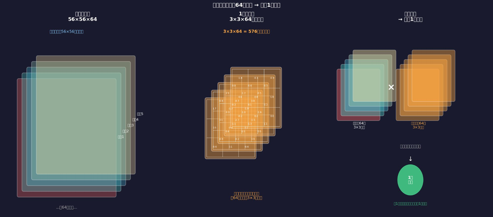
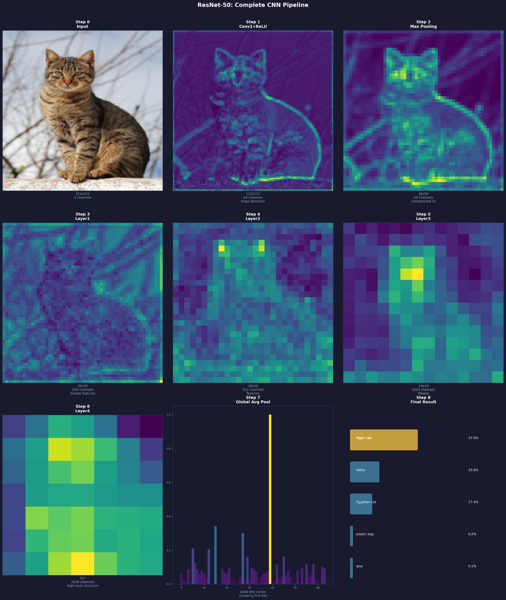
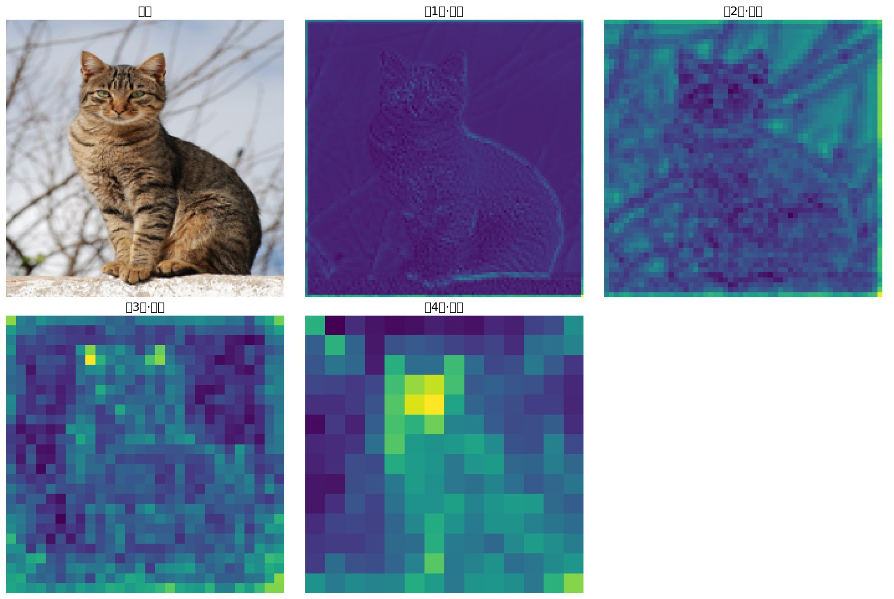
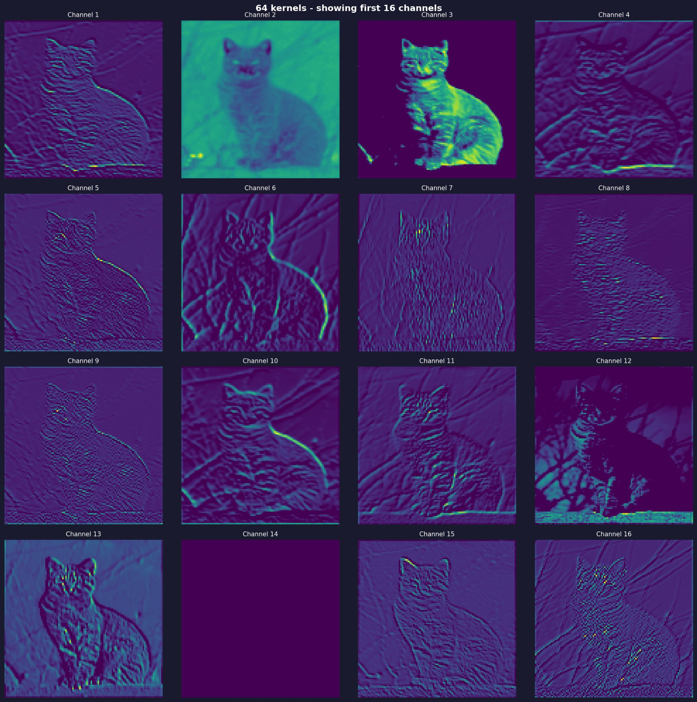

卷积神经网络 · ResNet-50实战
从一张猫的图片出发，完整走一遍 ResNet-50 的每个步骤，亲眼看到 CNN 每一层在提取什么特征，最终输出 tiger cat 57.9%。
CNN 是什么
CNN（卷积神经网络）不是凭空发明的，是从你已经理解的卷积操作自然延伸出来的。
传统卷积核
人工设计，比如 Sobel 核检测边缘，只有9个固定数字，只能检测一种特征。
CNN卷积核
训练出来，数百万个数字，64个卷积核各自学会检测不同特征，没有人告诉它们各自负责什么。
CNN 训练的本质是调整卷积核的数字。训练之前是随机数，训练完成后是有意义的权重。你下载的模型文件（resnet50.pth，约100MB）就是这5000万个训练好的数字。
卷积核是立体的
普通卷积核是平面的 3×3，CNN 里的卷积核是立体的 3×3×通道数。

输入：56×56×64（64个通道） 卷积核1（3×3×64）： 通道1的3×3区域 × 卷积核第1层权重 → 求和 → 数字A1 通道2的3×3区域 × 卷积核第2层权重 → 求和 → 数字A2 ... 通道64的3×3区域 × 卷积核第64层权重 → 求和 → 数字A64 A1 + A2 + ... + A64 = 输出1个像素值（Channel 1） 64个卷积核重复 → 输出64个通道 → 56×56×64
卷积核深度 = 输入通道数（必须匹配）。卷积核数量 = 输出通道数（想要多少输出通道就用多少卷积核）。
ResNet-50 完整流程
50层卷积，把一张猫的图片变成 tiger cat 57.9%。

每层在看什么

第1层：边缘分布均匀，猫轮廓+背景树枝全部检测到，信息丰富但无重点 第2层：池化后开始聚焦，猫耳朵位置开始亮起 第3层：稀疏亮点，对特定形状有强响应，注意力开始集中 第4层：高度聚焦猫头，大部分信息已被过滤，只保留关键判断信息
越深的层图像越小、越抽象，看起来信息在减少。但实际上丢掉的是对任务无用的信息，保留的是对"判断是不是猫"最关键的信息。这个取舍是模型从几百万张训练图里自动学出来的。
64个卷积核各自学到什么
第一层64个卷积核，每个检测不同的特征，互相分工，没有人指定各自的职责。

Channel 1：轮廓边缘，猫外形轮廓亮，内部暗 Channel 2：整体亮度，整个身体区域都亮 Channel 3：高亮区域，正面和亮部最亮 Channel 6：毛发纹理，虎斑纹路清晰可见 Channel 7：细线条，尾巴和细边缘特别亮 Channel 12：背景检测，猫的位置反而暗，背景亮 Channel 14：几乎全黑，这个卷积核检测的特征在此图中不存在 Channel 16：散点响应，只对某些高频特征有响应
如果两个卷积核学成一样的，对最终结果的贡献完全重复，浪费了一个"名额"。梯度下降自然推动每个卷积核往不同方向优化，因为学不同的特征对降低损失更有帮助。
重要概念
残差连接
每个卷积块的输出 = 卷积结果 + 原始输入。给梯度留一条捷径，解决深层网络训练时梯度消失的问题。ResNet-50 能训练50层就是靠残差连接。
瓶颈结构
每个卷积块：1×1压缩→3×3提取→1×1扩展。先降维减少计算量，再提取特征，再升维增加通道数。是 ResNet 的核心设计技巧。
BatchNorm
每层卷积后把输出归一化到均值0、方差1。防止数值范围越来越不可控，训练更稳定，可以用更大的学习率。完整写法：Conv + BN + ReLU。
Dropout
训练时随机关掉20%的神经元，强迫模型不依赖任何单个神经元。防止过拟合，避免模型记住特殊情况而不是真实规律。
损失函数
分类任务·交叉熵
ResNet 识别猫用的损失函数。预测概率越高损失越小，概率越低损失越大，推动模型提高正确类别的概率。
降噪任务·L1损失
逐像素比较预测图和真实图的差异，绝对值求和。比L2保留更多细节，降噪任务通常用L1。
感知损失
用另一个CNN提取特征图，比较特征图差异而不是像素差异。更符合人眼感知，生成图像视觉效果更好。
讨论记录
和你的工具的关系
现在（经典算法）： BM3D 降噪 → 手工设计规则区分信号和噪点 未来（深度学习）： 下载训练好的降噪模型文件（NAFNet、DnCNN等） → 加载卷积核参数 → 把有噪点的图喂进去 → 输出干净的图 区别： 训练好的卷积核数字从几百万张图里学出来 比手工设计的规则更准确，特别是暗部细节和高ISO噪点